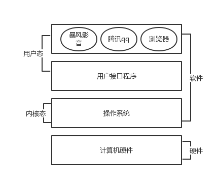

操作系统的概念
一、操作系统的概念
操作系统是一个协调、管理、控制计算机硬件资源给应用程序使用的一种控制程序
计算机三层体系
- 应用程序：图形界面，命令解释器
- 操作系统：windows操作系统 linux
- 计算机硬件（cpu、内存、硬盘）
操作系统与应用程序的区别
- 为了方便上层的应用程序开发（操作系统把复杂的硬件控制的代码都给写好了，然后对上层提供简单的功能）
- 操作系统是负责控制硬件的程序，给上层应用程序来调用
- 应用程序是给用户使用的程序
进程与程序
- 程序：就是一个或者一系列代码文件—》静态
- 进程：就是一个程序的运行过程——–》动态
- 进程代表的是程序的运行过程，而负责运行整个过程是操作系统，所以进程是操作系统的最核心的概念
二、操作系统的构成
操作系统由两部分构成
- 系统调用接口：为上层的应用程序提供的一系列的功能
- 内核：负责控制硬件的运行的
操作系统的两种工作状态
- 用户态：执行的是系统调用接口层的代码，负责跟上层的应用程序打交道
- 内核态：执行的是内核某部分代码，负责跟底层的硬件打交道

操作系统的整个运行过程会频繁发生用户态与内核态的切换
操作系统启动之后，应用程序又是如何启动/运行的？
操作系统接到启动程序的指令
操作系统会控制硬件来运行某个应用程序
操作系统控制硬盘把程序的代码文件读入内存
操作系统控制cpu去内存里读取程序的指令来运行
- 双击快捷方式——-》图形界面——-》windows系统————》硬件
- 执行某个命令——-》命令解释器bash——-》linux系统————》硬件
操作系统的功能
隐藏了丑陋的硬件调用接口，为应用程序员提供调用硬件资源的更好，更简单，更清晰的模型（系统调用接口）。应用程序员有了这些接口后，就不用再考虑操作硬件的细节，专心开发自己的应用程序即可。
- 操作系统提供了文件这个抽象概念，对文件的操作就是对磁盘的操作，有了文件我们无需再去考虑关于磁盘的读写控制（比如控制磁盘转动，移动磁头读写数据等细节）
将应用程序对硬件资源的竞态请求变得有序化
- 很多应用软件其实是共享一套计算机硬件，比方说有可能有三个应用程序同时需要申请打印机来输出内容，那么a程序竞争到了打印机资源就打印，然后可能是b竞争到打印机资源，也可能是c，这就导致了无序，打印机可能打印一段a的内容然后又去打印c…,操作系统的一个功能就是将这种无序变得有序
三、多道技术
多道技术是操作系统的核心技术，控制多个/多道程序看起来是同时运行，多道技术的实现是为了解决多个程序竞争或者说共享同一个资源（比如cpu）的有序调度问题，解决方式即多路复用，多路复用分为时间上的复用和空间上的复用。
空间上的复用
- 复用的是内存，指的是多个程序能够同时读入内存里
- 空间上的复用必须注意一个点：加载到内存中的多个程序所占用的内存空间必须是隔离的才行

时间上的复用
- 复用的是cpu的时间，指的是cpu在多个内存中的程序之间快速的切换
- 什么情况切换
- 遇到 IO 操作一定会切换
- 没有遇到 IO 操作，也要切换，因为要让cpu能够雨露均沾（Linux操作系统）
一个cpu同一时间只能做一件事
- 并发：多个任务看起来是同时运行的，只有单核也能实现并发
- 并行：多个任务是真正意义上的同时运行的，只能多核才能实现并行
四、操作系统的安装原理
驱动程序：是硬件厂商专门为自己的某款硬件设备开发的，用于驱动该硬件运行的专项程序（必须遵循操作系统的标准）
安装的操作的核心原理简介：操作系统本质就是一种程序。从大的层面看安装程序的本质就是把这个程序的文件存入硬盘
操作系统的iso包（又称之为操作系统镜像）：iso的本质就是一个压缩包，里面放着一堆操作的代码文件

安装原理详解
用另外一台机器从网上下载一个iso镜像包，将该iso包存入移动硬盘、光盘、U盘中—》得到一个启动盘
把启动盘插入你的计算机中（接下来要做的事情，是把启动盘里的操作系统数据拷贝到你自己的电脑的硬盘里）
按下电源键，启动计算机，固定先启动bios程序（basic input output system）
bios启动之后，会根据配置去某些地方加载真正的操作系统代码，bios的配置信息是存放于CMOS中的
找到启动盘后，bios会将启动盘里的操作系统读入内存，然后bios会控制cpu去内存中执行代码，然后真正的操作系统就运行起来
接下来负责掌管硬件运行的就是真正的操作系统了，bios就可以退出舞台
把启动盘里的操作系统拷贝到本地硬盘
五、操作系统的启动流程
按电源键，通电
先执行bios程序，由bios程序临时接管整个硬件的控制
bios会读取自己的配置项（CMOS），找到一个启动盘（存放有操作系统的硬盘、光盘、移动u盘）
找到启动盘之后，会先读取启动盘的第一个扇区的数据512Byte拉起bootloader程序（前446引导信息，64是分区信息，后2位是结束的标志位）
- 446字节的引导程序又称之为bootloader（grub程序是我们常用的一种bootloader）
bootloader程序启动之后，负责把操作系统后续的代码都加载到内存中，然后运行起来
接下来就由真正的操作系统掌握整个计算机的运行
bios操作会去检查各个驱动程序、硬件是否正常，反馈给真正的操作系统，然后就可以退出舞台
六、用户空间和内核空间
用户空间：指的是操作系统为用户程序分配的内存区域。每个运行在用户空间的应用程序都有其独立的地址空间，这有助于保护系统免受恶意或错误代码的影响。用户空间的应用程序不能直接访问硬件资源或关键的操作系统数据结构。当程序以用户态运行时，它只能访问属于自己的那部分用户空间内存，而不能直接访问内核空间或其他进程的空间。
内核空间：是操作系统内核使用的内存区域。这里存放了内核代码、设备驱动程序、以及所有需要直接访问硬件资源的数据结构等。内核空间允许直接操作硬件资源和管理整个系统的状态。